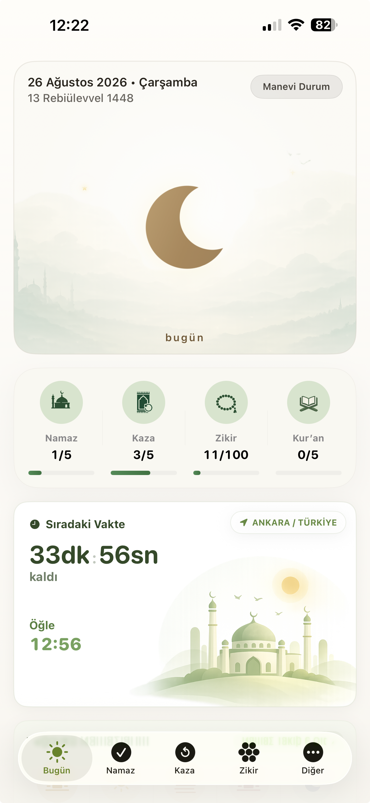

Namaz & Kaza Takibi
Vakit namazlarını kaydet, kaza borçlarını düzenle ve ilerlemeni tek bakışta gör.
✦Manevi takip, sade bir düzende
Namazlarını, Kur’an okumalarını ve zikirlerini tek bir yerde takip et. Manevi devamlılığını gör, düzenini huzurla koru.
✓Ücretsiz indir✓Sade ve huzurlu deneyim

Tek uygulama, dengeli bir rutin
Vakit namazlarını kaydet, kaza borçlarını düzenle ve ilerlemeni tek bakışta gör.
Okumalarını ve günlük zikirlerini kaydet; manevi rutinini sakin bir akışta sürdür.
İbadetlerin arttıkça hilalinin gelişimini gör. Devamlılığın görünür olsun.
Namaz, kaza ve diğer ibadetlerine ait gelişimi sade grafiklerle takip et.
Kendinle yarışmadan, kendini görerek
İbadetlerim, suçluluk değil farkındalık oluşturmak için tasarlandı. Verilerin sana ait; deneyimin sakin, anlaşılır ve destekleyici.
Bugün küçük bir adımla başla
İbadetlerini tek bir yerde takip et, manevi ilerlemeni görünür kıl.